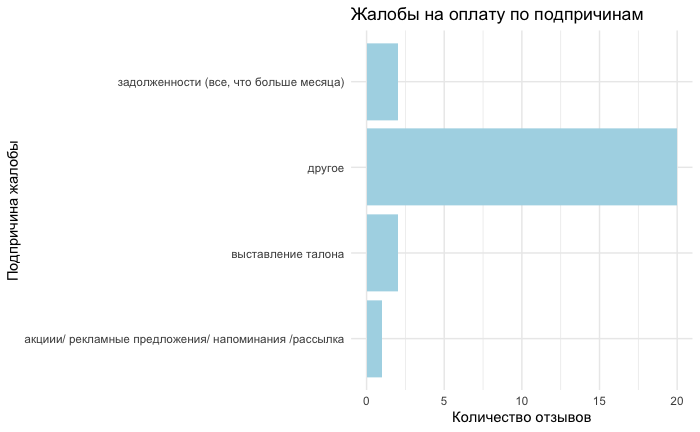

Анализ отзывов
тестовое задание
Анализ разделен на смысловые блоки (общая статистика, анализ негативных отзывов, работа с отзывами, анализ по отделениям и клиническим направлениям, финансовый анализ и дополнительные примечания). В панели слева можно выбрать интересующий вас раздел.
Общая статистика
-
Количествово пациентов за период - 87 540
-
Количество отзывов за указанный период - 331
-
Источники отзывов (в %) - электронные отзывы становятся основным способом обратной связи (более 60%)

- Тональность отзывов - больше половины имеют негативную окраску (61,6%)
Анализ причин негативных отзывов
в силу большого количества негативных отзывов следует подробнее рассмотреть их распределение по причине и отделениям, сложности обращения
-
Топ-5 причин негативных отзывов
Коренная причина Количество (в %) Сервис 39,2 Медицинская компетентность 17,5 Оплата 10 Документация для пациентов 6,3 КЦ 4,6 -
Связь между причиной и отделением
Отделение МРТ/КТ в ГВВ, отделение “Фрунзенское”, отделение “Петроградское”, отделение “Курортное”, отделение “Исполкомское”, клиника ВРТ на Ильюшина, ВРТ Литейный, отделение “Южное”, отделение “Приморское” имеют меньше всего негативных отзывов (1-4)
отделения, имеющие наибольшее количество негативных отзывов визуализированы на тепловой карте (при наведении на любой квадрат высвечивается значения отделения по причине и кол-ву отрицательных отзывов)
-
Связь причины и сложности обращения
-
Простые случаи – 117
-
Средние случаи – 56
-
Сложные случаи – 30
-
Юридические случаи – 1
🔹 Самая частая причина негативных отзывов – сервис - включает 60 простых случаев, 25 средних и 9 сложных
🔹 Вторая по частоте проблема – медицинская компетентность (41 случай) - сюда входит 23 простых, 8 средних и 7 сложных случаев, а также 1 юридический
🔹 Оплата – третья по количеству жалоб (24 случая) - наибольшая доля средних (15) и сложных (8) случаев
🚨 Высокая доля сложных случаев в “оплате” (8 из 24) и “медицинской компетентности” (7 из 41) указывает на потенциальные системные проблемы
⚠ Юридический случай по медицинской компетентности – единственный в таблице, но он может быть критически важным
Анализ работы с отзывами
- Средний срок закрытия отзывов - 3 дня (есть выброс - 30-ти дневный срок закрытия - письменный отрицательный отзыв, юридический)

-
Процент отзывов, закрытых в срок - 100%
-
Связь сложности обращения и срока закрытия - корреляция = 0.311 — это положительная умеренная связь между сложностью обращения и сроком закрытия. Это означает, что более сложные случаи в среднем закрываются дольше, но связь не очень сильная
-
Текущий статус отрицательных и нейтральных отзывов - большинство вопросов или запросов, о которых шли отзывы, были закрыты
| Статус | Процент |
|---|---|
| закрыта | 77.56% |
| не отвечает | 8.39% |
| в работе | 6.64% |
| возврат | 5.94% |
| перезвонить | 1.05% |
| звонок старшего администратора | 0.35% |
Анализ отзывов по отделениям и клиническим направлениям
- Отрицательные отзывы по каждому отделению
🚨 отделение “Северное”
🚨 отделение “Литейное”
🚨 отделение “Московское”
в дальнейшем, для более глубоких выводов будет полезно внести стастистику по кол-ву пациентов в каждом направлении за указанный период
- Топ-5 проблемных клинических направления (больше всего отрицательных и нейтральных отзывов)
Финансовые вопросы
Документы
ДМС
Неврология
ЛК
Финансовый анализ (связь отзывов и оплаты)
-
Доля жалоб на оплату среди всех отзывов - 8,7%
-
Число возвратов денег из-за жалоб - 14 возвратов (на общую сумму в 48 650 р)
-
Средняя сумма возврата - 3 475 р
-
Распределение отрицательных отзывов на оплату по подпричинам

Дополнительно
В столбце “ФИО на кого отзыв” значения чаще всего не повторялись, однако у некоторых обнаружились по несколько негативных отзывов (особенно интересно будет посмотреть в разрезе по году)
🚨 Литвинов Артем - 2 отрицательных отзыва за месяц по качеству медицинского обслуживания и выставлению талона (отделение “Северное”, травматология)
🚨 Скочкова Вера - 2 жалобы на согласование с СК (“Обводный”, ДМС)
🚨 Масликов Антон - 2 жалобы на качество медицинского обслуживания (отделение “Северное”, травматология)
🚨 Мискевич Марат - 2 отрицательных отзыва на качество медицинского обслуживания (отделение “Южное”, травматология)
Выводы
-
331 отзыв за месяц, из них более 60% электронном формате
-
более 61% отрицательных отзывов, 24% и 13% - нейтральных и благодарностей соответственно
-
две основные причины отрицательных отзывов - сервис (примерно 40%) и медицинская компетентность (около 17%)
-
отделение “Северное”, “Литейное” и “Московское” имеют наибольшее кол-во негативных отзывов
-
высокая доля сложных случаев в “оплате” и “медицинской компетентности”, один юридический случай по медицинской компетентности
-
средний срок закрытия - 3 дня, в текущем статусе закрыто порядка 78% отзывов
-
доля жалоб на оплату среди всех отзывов - 8,7%, средняя сумма возврата в выборке - 3 475 р
-
на некоторых сотрудников есть >1 негативного отзыва за месяц
Дальнейший анализ
При наличии отзывов за год можно исследовать, как изменялись причины негативных отзывов по месяцам (это поможет выявить пиковые месяцы с повышенным количеством негативных отзывов, что может быть связано с праздничными периодами, перегрузкой системы или другими внешними факторами), тепловая карта проблемных отделений за год (большое кол-во отрицательных отзывов на определенные направления уже нельзя будет списать на ограниченность выборки), динамика по тональности отзывов, анализ по причинам и подпричинам за год, анализ по источникам отзывов - какие каналы привели к большему числу негативных отзывов (будет полезно для оценки эффективности разных каналов обратной связи и выявления, где возможно произошли проблемы в сборе отзывов), если в компании были внедрены какие-либо изменения или инициатив (например, изменения в обслуживании, обновления сайта, новые проекты), то можно сравнить период до и после внедрения, также можно будет построить тренды по выявленным проблемам и методам их решения.